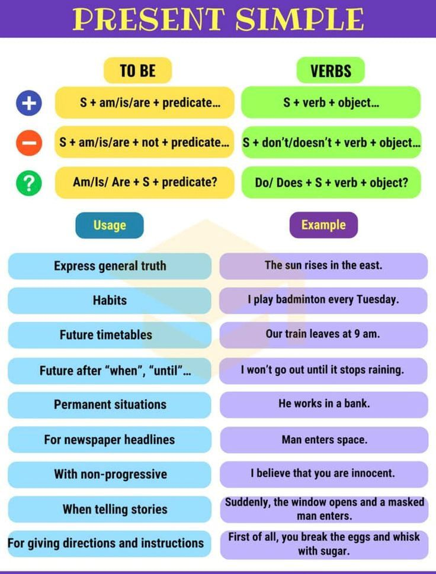
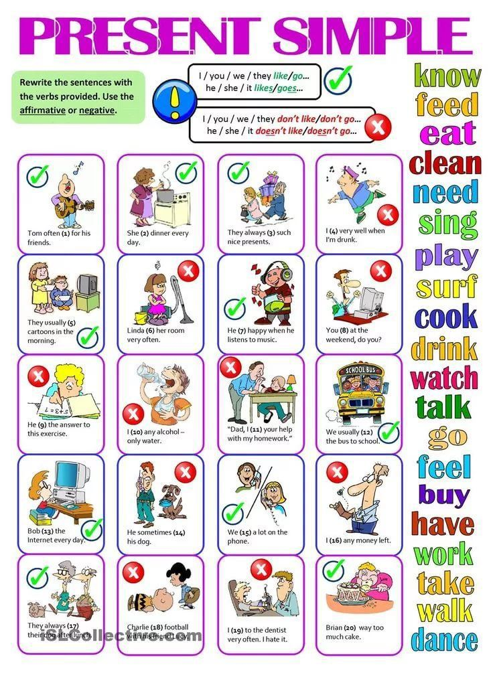

Lesson 2
Present Simple
Please watch rule
  Text
In today’s fast-paced world, many people struggle to maintain a healthy lifestyle. The demands of work and personal life often leave individuals with little time for exercise or preparing nutritious meals. Despite these challenges, it is crucial to prioritize health, as it affects both physical and mental well-being.
Research shows that regular physical activity plays a significant role in maintaining health. People who exercise regularly tend to feel more energetic and productive throughout the day. For instance, a brisk walk or a short workout can greatly improve mood and reduce stress levels. Many health experts recommend that adults engage in at least 150 minutes of moderate aerobic activity each week. This can include activities such as cycling, swimming, or even dancing.
In addition to physical activity, mental health is just as important. The pressure of daily life can lead to anxiety and stress, which in turn can affect one’s overall health. Taking breaks during work to relax and recharge is essential. For example, after working for an hour, you might take a 5-minute break to stretch or practice deep breathing. These small habits can significantly improve your concentration and productivity.
Moreover, nutrition plays a crucial role in maintaining good health. Consuming a balanced diet that includes a variety of fruits, vegetables, whole grains, and lean proteins helps the body function properly. It is important to remember that what we eat can directly impact our energy levels and mood. For instance, people who consume high amounts of processed foods often report feeling fatigued and lethargic. On the other hand, a diet rich in nutrients can enhance brain function and improve emotional stability.
Hydration is another vital aspect of a healthy lifestyle. Drinking enough water throughout the day ensures that the body operates efficiently. Many people forget to drink water, especially when they are busy, which can lead to dehydration and fatigue. A common recommendation is to drink at least eight 8-ounce glasses of water daily, but individual needs may vary depending on activity level and climate.
Finally, establishing a routine that combines physical activity, mental breaks, and proper nutrition is key to long-term health. Individuals who follow a consistent schedule tend to feel more balanced and in control of their lives. As you make small changes to your daily habits, you may find that your overall well-being improves. Remember, health is not just about physical fitness; it is a combination of physical, mental, and emotional factors that contribute to a fulfilling life.
New words:
1. Struggle — бороться
2. Leave — оставлять
3. Plays — играть (в контексте "играть роль")
4. Exercise — упражняться
5. Recommend — рекомендовать
6. Relax — расслабляться
7. Consume — потреблять
8. Helps — помогает
9. Ensure — гарантировать
10. Forget — забывать
Lets do tasks(click the button)